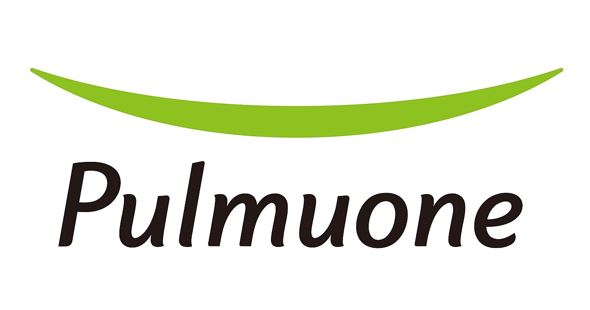

홈 > 브랜드 매거진 > 풀무원
풀무원
풀무원(Pulmuone)은 포장두부와 콩나물 등 식물성 식품으로 알려진 한국의 식품 기업으로, 1980년대 초 출범했다.
산업 분야 식음료 · 공개 등급 자료 기반 · 브랜드 평가 4.4 ★

한눈에 보는 브랜드
풀무원(Pulmuone)은 한국의 대표 식물성 식품 기업이다. 1981년 설립돼 1984년 풀무원식품으로 포장두부 사업을 본격화했다.
브랜드 관점
유기농에 뿌리를 둔 한국 대표 신선식품 기업으로, 두부·나또 등 건강식품에 강하다.
시작과 성장
1981년 식품회사로 출발해 1984년 풀무원식품으로 법인 전환했다(모태는 원경선의 풀무원농장 유기농 사업).
브랜드 아이덴티티
국내에 포장두부를 상용화한 기업으로, 두부·콩나물·두부면 등 건강 지향 식물성 식품을 중심으로 성장해 왔다.
제품과 서비스
두부를 주력으로 나또, 콩나물, 생면 등 신선식품을 만든다.
사람들
현재 상태
2024년 창립 40주년을 맞아 지속가능식품기업 비전을 선포했고, 두부·나또와 미국 법인 매출이 성장했다.
타임라인
정리된 연도형 이벤트가 없습니다.
BI/CI 변천사
함께 읽을 브랜드
네슬레(Nestlé)는 스위스 브베에 본사를 둔 세계 최대 규모의 식음료 다국적 기업이다.
 식음료 · 자료 기반오뚜기
식음료 · 자료 기반오뚜기오뚜기(Ottogi)는 1969년 설립된 한국의 종합 식품 기업으로, 국산 카레와 다양한 가공식품으로 알려져 있다.
DA
대상
식음료 · 자료 기반대상대상(Daesang)은 미원과 청정원으로 유명한 한국의 종합 식품·조미료 기업으로, 1956년 창업했다.
 식음료 · 자료 기반동원
식음료 · 자료 기반동원동원(Dongwon)은 동원참치로 유명한 한국의 수산·종합식품 기업으로, 동원그룹 모태는 1969년 창업했다.
 식음료 · 자료 기반롯데웰푸드
식음료 · 자료 기반롯데웰푸드롯데웰푸드(Lotte Wellfood)는 빼빼로·가나 초콜릿으로 유명한 롯데그룹 계열 제과 기업으로, 1967년 롯데제과로 설립돼 2023년 현 사명이 됐다.
버거킹는 미국의 식음료 브랜드로, 맛, 메뉴 구성, 패키지, 매장 또는 유통 채널이 함께 브랜드 경험을 만드는 영역입니다.
펩시(Pepsi)는 1893년 미국 노스캐롤라이나주 뉴번의 약사 케일럽 브래덤이 만든 탄산음료에서 출발해 1898년 '펩시콜라'로 개명된 음료 브랜드다. 1965년...
 식음료 · 편집 검수하인즈
식음료 · 편집 검수하인즈하인즈(Heinz)는 1869년 헨리 J. 하인즈가 미국 펜실베이니아주 샤프스버그에서 설립한 식품 회사로, 케첩을 비롯한 가공식품으로 유명하다. 2015년 크래프트...